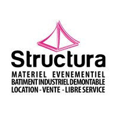
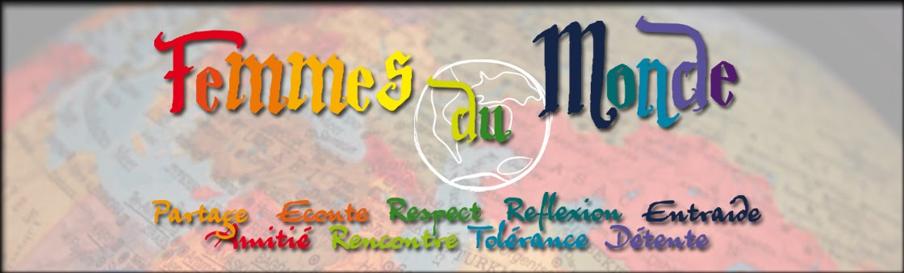
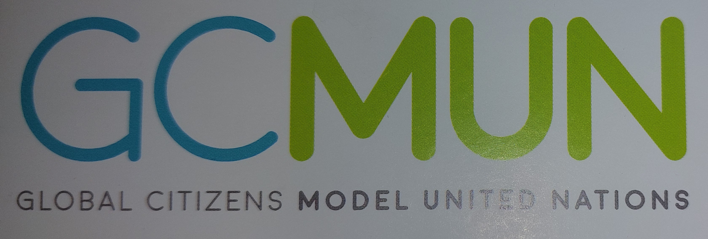
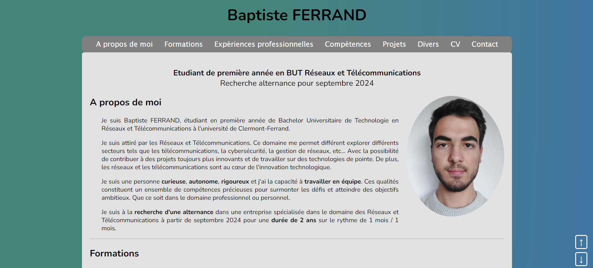
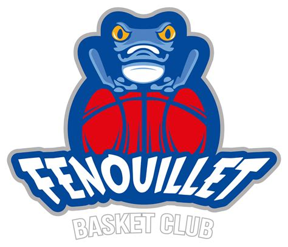
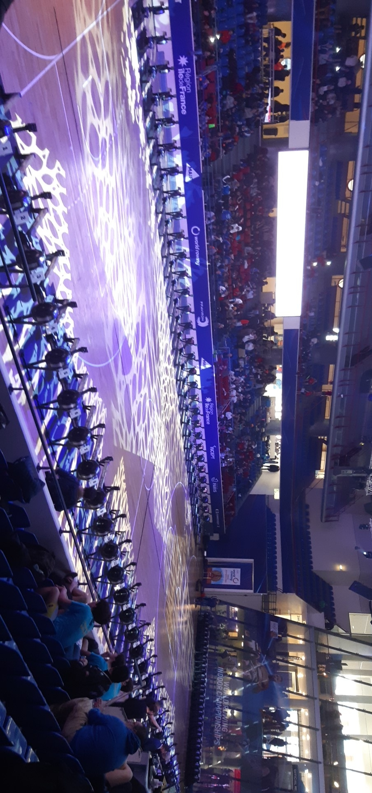

Etudiant de première année en BUT Réseaux et
Télécommunications
Recherche alternance pour septembre 2024

A propos de moi
Je suis Baptiste FERRAND, étudiant en première année de Bachelor Universitaire de Technologie en Réseaux et Télécommunications à l'université de Clermont-Ferrand.
Je suis attiré par les Réseaux et Télécommunications. Ce domaine me permet différent explorer différents secteurs tels que les télécommunications, la cybersécurité, la gestion de réseaux, etc... Avec la possibilité de contribuer à des projets toujours plus innovants et de travailler sur des technologies de pointe. De plus, les réseaux et les télécommunications sont au cœur de l'innovation technologique.
Je suis une personne curieuse, autonome, rigoureux et j'ai la capacité à travailler en équipe. Ces qualités constituent un ensemble de compétences précieuses pour surmonter les défis et atteindre des objectifs ambitieux. Que ce soit dans le domaine professionnel ou personnel.
Je suis à la recherche d'une alternance dans une entreprise spécialisée dans le domaine des Réseaux et Télécommunications à partir de septembre 2024 pour une durée de 2 ans sur le rythme de 1 mois / 1 mois.
Formations
- 2023 - 2024 : BUT Réseaux et Télécommunications (63) : Première année à l'IUT Clermont Auvergne dans un cursus en trois ans. Formation généraliste dans le domaine des Réseaux et Télécommunications, spécialisée dans la cybersécurité.
- 2020 - 2023 : Lycée Toulouse-Lautrec de TOULOUSE (31) : BACCALAURÉAT générale mention Assez bien - Spécialités Mathématiques, Physiques-Chimie et Section Européenne Anglais.
- 2022 : Prévention et secours civique de niveau 1 (PSC1)
Expériences professionnelles
-
Été 2023 : Missions avec l'agence d'intérim Temporis (31):
- Opérateur de production dans l'entreprise Plexial Composite.
- Travailler au sein d'une entreprise de revêtement de façade m'a offert une expérience enrichissante, impliquant l'utilisation de centres d'usinage à commande numérique pour découper des composants, ainsi que le façonnage manuel des plaques. Dans l'ensemble, cette expérience a contribué à développer des compétences diversifiées, alliant la manipulation de technologies avancées à l'application de méthodes artisanales, renforçant ainsi ma polyvalence professionnelle.
- Manutentionnaire dans l'entreprise Structura (31).
- En participant à la mise en place et au démontage de chapiteaux et de scènes pour divers événements sur différents sites, j'ai renforcé mon esprit d'équipe et d'entraide. Cette expérience a favorisé la collaboration, la communication. Elle a également développé ma capacité à m'adapter rapidement, gérer le temps de manière efficient.
Logo
Logo

- 2022 - 2023 : Association Femme du Monde (31): Soutiens aux élèves de collèges.
- Pendant une année au sein d'une association, j'ai fourni un soutien scolaire à des collégiens, les aidant dans leurs devoirs, exercices, leçons et projets. Les séances incluaient également des accompagnements spécifiques pour renforcer leurs compétences dans certaines matières. Cette expérience a largement contribué à développer mes qualités de pédagogue. J'ai adapté mes méthodes aux besoins de chacun, et renforcé mes compétences de communication et de patience.

Compétences
- Humaines :
- Travail en équipe : Le Basket m'a permis de développer un esprit d'équipe. Il met l'accent sur la communication, la collaboration et la confiance. "Seul, on va plus vite. Ensemble, on va plus loin"
- Rigoureux : Je suis précis, méthodique et attentif aux details dans les différentes tâches que j'effectue.
- Autonome : Je suis capable de travailler sans aide, j'aime chercher par moi-même lorsqu'un obstacle s'oppose à moi.
- Curieux : Je m'intéresse à des sujets très variés comme la finance, la pâtisserie ou encore le sport.
- Techniques :
- Réseaux 70 %
-
Grâce aux réseaux, j'ai pu configurer des équipements
informatiques tels que des ordinateurs, des AP Wifi, des routeurs
et des commutateurs. Notamment lors de travaux pratiques, j'ai dû
configurer des ordinateurs et un point d'accès wifi pour qu'ils
puissent communiquer entre eux. C'est-à-dire mettre en place un
adressage IP : une adresse IP, un masque et une passerelle. Une
adresse IP agit comme un identifiant unique pour les périphériques
réseau. Un masque est utilisé pour définir le réseau auquel un
appareil appartient. Une passerelle facilite la communication
entre des réseaux distincts.
Ainsi, j'ai compris comment fonctionne la communication entre plusieurs équipements d'un réseau. - Programmation 75 %
-
En programmation, j'ai pu découvrir différents langages tels que
le bash, le python, l'HTML et le CSS. J'ai notamment créé un site
qui fait office de portfolio. Pour cela, j'ai utilisé le langage
HTML pour élaborer le contenu de la page et aussi le langage CSS.
Ce dernier est un outil qui permet aux développeurs web de
contrôler l'apparence visuelle de leurs pages et de les
personnaliser. Plus précisément, il permet aussi de dimensionner
la page, de modifier l'arrière-plan, les tailles de police, etc.
Il permet de choisir la mise en forme.
Cette réalisation m'a permis de pratiquer et de me rendre compte des possibilités et des potentiels avec l'ensemble des langages. - Télécommunications 80 %
-
En télécommunications, j'ai pu analyser des signaux. Lors d'un
travail pratique, j'ai examiné l'atténuation d'un câble. J'ai
étudié le signal à travers un câble de 100 mètres, effectuant des
mesures à différentes fréquences. J'ai constaté que plus la
fréquence de diffusion est élevée, plus l'atténuation est grande.
Ces analyses sont essentielles pour garantir des communications
fiables et efficaces.
En effet, l'analyse est cruciale pour assurer une communication fiable et efficace. - Langues :
-
Anglais B2 : Séjour linguistique scolaire à New
York avec mission à l'ONU (GCMUN).
Logo de la mission - Espagnol : Notions de base.
Projets
Portfolio
Contexte : réalisation seul en BUT
HTML (HyperText Markup Language) m'a servi à structurer de manière logique et ordonnée le contenu de mon site. Grâce à des balises soigneusement sélectionnées, j'ai pu définir des éléments tels que les titres, les paragraphes, les listes, et même intégrer des images de manière à rendre l'information claire et facilement accessible.
En parallèle, le langage CSS (Cascading Style Sheets) est intervenu pour offrir une dimension esthétique à mon portfolio. Cet outil puissant a permis de personnaliser l'apparence visuelle de chaque élément sur mes pages. Du dimensionnement de la page à la modification des propriétés comme l'arrière-plan et les tailles de police, CSS m'a donné le contrôle complet sur la présentation de mon site. Il a également joué un rôle essentiel dans le choix de la mise en forme, contribuant ainsi à créer une expérience utilisateur harmonieuse et attrayante.
L'utilisation des languages HTML et CSS m'a permis de donner vie à mon portfolio en ligne, en garantissant une structure solide et une esthétique soignée. Ce projet m'a non seulement offert l'opportunité de mettre en avant mes compétences en développement web, mais a également renforcé ma compréhension des langages fondamentaux du web.
GCMUN, mission a l'onu
Contexte : réalisation seul ainsi qu'en équipe le jour de la session
Dans le cadre de cette expérience, j'ai débuté en rédigeant un "position paper" qui exprimait la position officielle de mon pays sur le sujet de discussion. Il a servi de base pour présenter les opinions, les objectifs et les propositions de mon pays lors des débats à venir. Ce processus a nécessité une compréhension approfondie des enjeux internationaux, ainsi que la capacité de formuler des idées de manière claire et persuasive. Après l'avoir soigneusement préparé, le document a été envoyé à l'ONU pour évaluation. L'ONU a ensuite élu le meilleur "position paper" parmi les participants, ce qui a ajouté un élément compétitif à l'expérience.
Lors de la session, j'ai participé à des débats avec d'autres représentants de différents pays en vue d'établir des lois favorables à notre nation. Pour y parvenir, des concessions ont été nécessaires afin de rallier d'autres pays à notre cause et d'obtenir leur soutien lors du vote final.
Cette expérience a souligné l'importance de la diplomatie, de la communication et de la recherche de solutions équitables dans un contexte international. Elle a également renforcé ma compréhension de la complexité des relations internationales et de la nécessité de coopérer pour parvenir à des accords bénéfiques pour l'ensemble de la communauté mondiale.
Divers
- Pratique du Basket en club de 2013 à 2023, Fenouillet Basket Club (31).
- Au fil de ces années, le basket m'a apporté bien plus que des paniers marqués. Il m'a inculqué des leçons de vie. L'esprit d'équipe m'a appris l'importance de la collaboration et de la communication. Les séances d'entraînement et les matchs ont forgé ma discipline personnelle et ma persévérance. Ce sport dynamique m'a également offert une pause du quotidien, une façon de libérer le stress et de me concentrer sur l'instant présent.
- Participation au championnat de France d'Aviron indoor UNSS en 2020 (75).
- Les compétitions sportives offrent une occasion unique d'acquérir de l'expérience. La compétition à un niveau national exige un haut niveau de préparation physique et mentale. Participer à un championnat de cette envergure m'a poussé à dépasser mes limites, ainsi qu'à trouver une source de motivation pour améliorer mes performances et atteindre de nouveaux objectifs sportifs.
- Intérêt pour les nouvelles technologies.
- Je suis passionné par les nouvelles technologies en raison de l'impact qu'elles ont sur notre vie quotidienne et sur le monde qui nous entoure. Observer l'évolution rapide de la technologie me fascine, car cela ouvre la porte à d'infinies possibilités d'innovation et de progrès. En tant que curieux de nature, j'aime explorer des concepts novateurs, découvrir de nouvelles idées et comprendre les mécanismes sous-jacents des technologies émergentes. C'est un domaine qui continue de m'inspirer et de me motiver à explorer les frontières toujours changeantes de la technologie moderne.


Curriculum vitae
Télécharger le document
Contact
 16 rue Descartes, 63000, Clermont-Ferrand
16 rue Descartes, 63000, Clermont-Ferrand
 Baptiste.FERRAND@etu.uca.fr
Baptiste.FERRAND@etu.uca.fr
 07.87.28.45.08
07.87.28.45.08